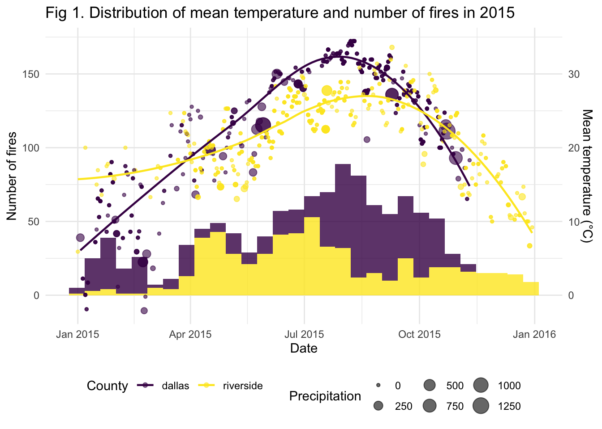

## load data
fire = read_csv("./final_report/data/fire_0515.csv")
state.abb = append(state.abb, c("DC", "PR"))
state.name = append(state.name, c("District of Columbia", "Puerto Rico"))
tidy_fire =
fire %>%
separate(cont_time, into = c("cont_hour","cont_min") ,sep = 2) %>%
separate(discovery_time, into = c("disc_hour","disc_min") ,sep = 2) %>%
mutate(cont_hour = as.numeric(cont_hour),
cont_min = as.numeric(cont_min),
disc_hour = as.numeric(disc_hour),
disc_min = as.numeric(disc_min)) %>%
# change julian days
mutate(discovery_date = as.Date(discovery_date - 2458014.5, origin = '2017-09-18'),
cont_date = as.Date(cont_date - 2458014.5, origin = '2017-09-18'),
duration_day = as.numeric(difftime(cont_date, discovery_date, units = "days"))) %>%
mutate(
duration_hour = cont_hour - disc_hour,
duration_min = cont_min - disc_min,
duration = duration_day * 24 + duration_hour + duration_min / 60
) %>%
select(-duration_day, -duration_hour,-duration_min) %>%
mutate(fips_name = tolower(fips_name),
fire_size_class = fct_inorder(fire_size_class),
region = state.name[match(state, state.abb)],
cause = as.factor(stat_cause_descr),
cause = relevel(cause, ref = "Missing/Undefined")) ## change reference level to "missing/undefined" for later linear modelsAs stated previously, we noticed a trend of increased size with accumulated fire existing time. We proposed a linear model where duration and causes of fire would be associated with size of fire. There is a significant (p-value < 0.001) association between duration of a fire and its size. For every hour increase in duration, the affect area would increase by 1.839 acres. In addition, certain causes will affect size of fire. There is a strong association between fires caused by lightening and increased size (p-value < 0.001). Compared to fires with missing or undefined causes, fires caused by strikes would affect 194.633 acres more on average under the same duration.
## linear model between size, duration and cause
model_1 = lm(fire_size ~ duration + cause, data = tidy_fire)
model_1 %>%
tidy() %>%
kable(digits = 3,
caption = "Association between duration and causes and size of fire")| term | estimate | std.error | statistic | p.value |
|---|---|---|---|---|
| (Intercept) | 116.207 | 25.798 | 4.505 | 0.000 |
| duration | 1.839 | 0.020 | 90.480 | 0.000 |
| causeArson | -113.273 | 29.845 | -3.795 | 0.000 |
| causeCampfire | -80.921 | 34.796 | -2.326 | 0.020 |
| causeChildren | -126.738 | 43.606 | -2.906 | 0.004 |
| causeDebris Burning | -111.950 | 28.755 | -3.893 | 0.000 |
| causeEquipment Use | -42.329 | 34.543 | -1.225 | 0.220 |
| causeFireworks | -121.090 | 53.775 | -2.252 | 0.024 |
| causeLightning | 194.633 | 28.586 | 6.809 | 0.000 |
| causeMiscellaneous | -123.196 | 28.562 | -4.313 | 0.000 |
| causePowerline | 19.349 | 57.188 | 0.338 | 0.735 |
| causeRailroad | -128.338 | 71.419 | -1.797 | 0.072 |
| causeSmoking | -181.467 | 47.751 | -3.800 | 0.000 |
| causeStructure | -91.447 | 95.803 | -0.955 | 0.340 |
We are also interested to know whether there would be more fires when temperature was higher. We retrieved daily weather data using rnoaa package at county level. We have selected 2015 as the target year for analysis since we focused on association between number of fires each day and daily temperature. Additionally, daily temperature distribution was relatively similar across years. We have also limited analysis to counties with most fires in 2015 in states where fires happened most frequently during these 10 years (California and Texas according to previous analysis): Riverside(CA) and Dallas(TX).
## subset the dataset to only include data from 2015 in TX and CA
fire_15 = tidy_fire %>%
filter(state == "CA" | state == "TX") %>%
filter(fire_year == 2015) %>%
drop_na(fips_code, fips_name) %>%
mutate(county = fips_name)
## find top 1 county in each state with most fires in 2015
fire_15 %>%
group_by(region, county) %>%
summarise(count = n()) %>%
ungroup() %>%
group_by(region) %>%
mutate(rank = rank(-count)) %>%
filter(rank == 1) %>%
select(-rank) %>%
kable(caption = "Counties with most count of fires in 2015")| region | county | count |
|---|---|---|
| California | riverside | 573 |
| Texas | dallas | 612 |
## subset further to focus on the above two counties
fire_15 = fire_15 %>%
filter(county == "riverside" | county == "dallas") %>%
mutate(date = discovery_date)
## get a list of stations in rnoaa
stations = ghcnd_stations()
## get station id in "riverside" and "dallas"
station_id = stations %>%
mutate(name = tolower(name)) %>%
filter(state == "CA" | state == "TX") %>%
filter(str_detect(name, c("riverside", "dallas")),
last_year == 2019,
element == "TMAX") %>%
pull(id)
## retrieve weather data in each station in 2015
weather_15 = meteo_pull_monitors(station_id,
date_min = "2015-01-01",
date_max = "2015-12-31",
var = c("PRCP", "TMAX", "TMIN")) %>%
mutate(tmax = tmax / 10,
tmin = tmin / 10,
tmean = (tmax + tmin) / 2,
county = recode(id,
"USW00003171" = "riverside",
"USW00013960" = "dallas"))
## join the weather data with cleaned dataset
fire_15_weather = left_join(fire_15, weather_15, by = c("date", "county"))The below graph illustrates distribution of daily mean temperature and number of fires per day in 2015. The points represents daily mean temperature which roughly follows a bell-shape curve. The histogram below shows number of fires per day. Both variables showed a similar pattern of distribution. In addition, precipitation is unlikely to be associated with number of fires with such insufficient data.
p1 = fire_15_weather %>%
ggplot(aes(x = date)) +
geom_histogram(aes(fill = county), alpha = .8, show.legend = FALSE) +
geom_point(aes(y = tmean * 5, size = prcp, color = county), alpha = .6) +
geom_smooth(aes(y = tmean * 5, color = county),
method = "loess", se = FALSE, alpha = .7, size = .8) +
scale_y_continuous(sec.axis = sec_axis(~./5, name = "Mean temperature (°C)")) +
labs(title = "Fig 1. Distribution of mean temperature and number of fires in 2015",
x = "Date",
y = "Number of fires",
color = "County",
size = "Precipitation")
p1
We build a linear regression model with number of fires and mean daily temperature. There is significant association (p-value < 0.001) between the two. For every 1°C increase in daily mean temperature, the average number of fires per day will increase by 0.074.
## form a new dataset with daily number of fires
fire_15_count = fire_15 %>%
group_by(date, county) %>%
summarise(n = n())
## join the count dataset with weather information
fire_15_count = left_join(fire_15_count, weather_15, by = c("date", "county"))
## linear regression
model_2 = lm(n ~ tmean, data = fire_15_count)
model_2 %>%
tidy() %>%
kable(digits = 3, caption = "Association between number of fires and mean temperature")| term | estimate | std.error | statistic | p.value |
|---|---|---|---|---|
| (Intercept) | 1.041 | 0.305 | 3.409 | 0.001 |
| tmean | 0.074 | 0.013 | 5.625 | 0.000 |